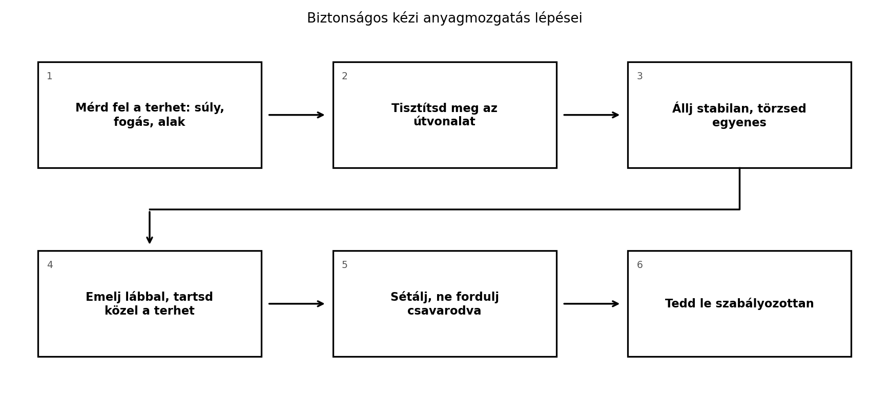

Reggel fél 8 van. A konyha éppen nyit. A tegnap esti takarítás után a padló még nedves, az áruátvételből megérkezett egy 25 kg-os burgonyás zsák, a folyosón üres rekeszek állnak, és az egyik dolgozó a menekülési út elé tolta a szennyes edényes kocsit. A szakács siet, megemeli a zsákot, közben megcsúszik, a zsák a lábára esik, a forró sütőtál pedig meglöki a sarkot.
Ez nem szerencsétlenség, hanem megelőzhető munkabaleset. A konyhai munkahely kialakítása, a közlekedési utak rendje, a biztonságos anyagmozgatás és a raktározás nem papírmunka: ezek nélkül minden nap megtörténhet a botlás, a vágás, a hátsérülés vagy a tűz. Ebben az alfejezetben megtanulod, mire kell figyelned ahhoz, hogy te és a munkatársaid biztonságban dolgozhassatok.
Képzeld el ugyanazt a burgonyás zsákot. Ha görbe háttal, nyújtott karral emeled fel, a gerincedre sokkal nagyobb erő hat, mint a zsák súlya. Ha viszont a zsákot közel húzod, behajlítod a térded, egyenes háttal tartod, és a lábaddal emelsz, a becsült terhelés a gerinceden sokkal kisebb. A közlekedési úton pedig minden rekesz, zsák és kocsi akadály: aki siet, nem veszi észre, és elesik. A menekülési utat eltorlaszoló kocsi pedig vészhelyzetben életveszélyes.
Ezt a szemléletet a későbbiekben lépésről lépésre írom le. Előbb azonban tisztáznunk kell a fogalmakat.
Definíció. A munkahely a munkavállaló által munkavégzés céljából használt terület, beleértve a konyhai helyiségeket, a közlekedési utakat, a raktárakat, a szociális helyiségeket és az étkezőt is.
Definíció. A közlekedési út az a kijelölt vagy rendszeresen használt útvonal, amelyen a dolgozók, az áruk és a kocsik közlekednek. A menekülési út ezen belül olyan folyamatosan szabadon tartott útvonal, amelyen vészhelyzetben biztonságos helyre lehet jutni.
Definíció. A kézi anyagmozgatás minden olyan tevékenység, amikor a munkavállaló saját izomerejével emel, tart, tol, húz, visz vagy mozgat terhet. Ide tartozik például a zsák felemelése, a rekesz tologatása, a tálcás ételszállítás is.
Definíció. A raktározás az élelmiszerek, eszközök, csomagolóanyagok, vegyi anyagok és hulladékok szabályozott, elkülönített, nyomon követhető tárolása a felhasználásig vagy elszállításig.
Definíció. A munkahelyi rend az a folyamatos állapot, amelyben minden eszköznek és anyagnak megvan a kijelölt helye, a közlekedési utak szabadok, a padló száraz és tiszta, a hulladék fedett edényben van. A rend nem kényelmi kérdés, hanem a balesetek és a keresztszennyeződés megelőzésének egyik legerősebb eszköze.
A konyhát és a hozzátartozó helyiségeket úgy kell kialakítani, hogy a dolgozók egészségét és biztonságát ne veszélyeztesse. Jogszabály. Az 1993. évi XCIII. törvény (munkavédelem) előírja, hogy a munkáltató köteles az egészséget nem veszélyeztető és biztonságos munkavégzés feltételeit biztosítani, ideértve a munkahely kialakítását, a közlekedési utakat és az anyagmozgatást is (ellenőrizendő: pontos szöveg). A munkahelyek kialakításának követelményeit a 3/2002. (II. 8.) SzCsM–EüM együttes rendelet szabályozza (ellenőrizendő: hatályos szöveg és szám).
A legfontosabb általános követelmények:
Közlekedési utak jellemzői:
Menekülési utak jellemzői:
Ajtók és lépcsők:
Jogszabály. Az Országos Tűzvédelmi Szabályzat (OTSZ) előírja a menekülési utak szabadon tartását, a tűzgátló ajtók önműködő záródását és a biztonsági jelek elhelyezését (ellenőrizendő: hatályos OTSZ).
A konyhában naponta sok terhet mozgatunk: zsák lisztet, rekesz zöldséget, tálcákat, edényeket. A helytelen anyagmozgatás hátsérülést, izomhúzódást, zúzódást okozhat.
Kézi anyagmozgatás:
A kézi tehermozgatás kockázatait a munkáltatónak kockázatértékelésben kell felmérnie. Figyelembe kell venni:
Eljárás. A biztonságos kézi emelés lépései:

A fenti ábra a biztonságos kézi anyagmozgatás lépéseit mutatja. A lépéseket ne ugorjuk át: előbb mérjük fel a terhet, és tisztítsuk meg az utat, csak utána emeljünk.
Részletes lépések:
A lépéssor szövege mögött testtartás áll. Az alábbi ábra bal oldalán a tipikus hiba látszik: nyújtott térddel, görbe háttal, a testtől távol nyúl a zsákért – ilyenkor a gerincet nagy erő terheli. Középen a helyes emelés: terpesz, hajlított térd, egyenes hát, a zsák a testhez közel. Jobbra felülnézetben a szállítás: fordulni kis lépésekkel kell, nem a törzs csavarásával. A körbe írt 1–6 számok a fenti hat lépés helyét mutatják.
Önellenőrzés: emelés előtt nézd meg, hol van a térded és a teher – ha a teher a lábfejed előtt messze van, előbb lépj közelebb. A HTML-kiadásban a ▶ gombbal lépésenként végigjátszhatod a hat lépést. A 25 kg-os zsák a fejezet példája, nem emelési határérték: a megengedett terhet az üzemi kockázatértékelés adja (ellenőrizendő: kézi tehermozgatás hatályos előírásai).
Számítás. Egy szárazáru-raktár polcszintjének megengedett terhelése . Egy rekeszben 6 darab -os konzerv van, a rekesz saját tömege . Hány rekesszel terhelhető a polc?
Tilos. A megengedettnél nagyobb súllyal terhelni a polcot, mert a polc leszakadhat, és súlyos balesetet okozhat.
Gépi anyagmozgatás:
A konyhában gyakran használunk kézikocsit, tálaló- és szállítókocsit, raklapemelőt, esetleg targoncát. A gépi anyagmozgatásra is szigorú szabályok vonatkoznak:
Figyelem. A targonca és a raklapemelő nem játék. Aki nem kapott rá oktatást, nem kezelheti, mert a baleset súlyos lehet.
A raktárak kialakítása a konyhai munka biztonságát és az élelmiszer-biztonságot is szolgálja. Raktározási típusok:
| Raktár típusa | Jellemző példák | Fontos szabály |
|---|---|---|
| Szárazáru-raktár | liszt, cukor, száraztészta, konzerv, fűszer | hűvös, száraz, szellőztetett; polcok stabilak; talajon ne tároljunk |
| Hűtött raktár | tej, hús, zöldség, gyümölcs, tojás | hőmérséklet-ellenőrzés; nyers és kész étel elkülönítve; FIFO |
| Mélyhűtött raktár | fagyasztott hús, zöldség, félkész termék | hőmérséklet folyamatos; ajtót ne hagyd nyitva |
| Vegyi anyag raktár | tisztítószerek, fertőtlenítők, vegyszerek | zárható, élelmiszertől elkülönítve; eredeti csomagolásban |
| Csomagolóanyag raktár | dobozok, fóliák, ételhordók | tiszta, száraz, pormentes; ne élelmiszerrel együtt |
| Hulladéktároló | zöldség- és gyümölcshulladék (héj, levél); ételmaradék, hús- és csonthulladék (állati melléktermék); használt olaj; szelektív hulladék | fedett, jelölt edények, gyakori ürítés, állattól és élelmiszertől távol; az állati melléktermék és a használt olaj külön gyűjtve |
Raktározási szabályok:
Az alábbi ábra ugyanazt a szárazáru-polcot kétféleképpen mutatja. A bal oldali helyes polcon (1) a teherbírás fel van tüntetve – a fenti számítás 120 kg-os polcszintjével –, (2) a nehéz, 13 kg-os rekeszek alul, de a padlótól elemelve állnak, (3) felül csak könnyű áru van, (4) a címkék előre néznek és a régebbi áru elöl áll (FIFO), (5) a vegyszer külön, zárt szekrényben van. A jobb oldali polcon ugyanezek a pontok hibásan szerepelnek.
Gyakorlásként keresd meg a jobb oldali polcon az öt hibát, mielőtt a jelmagyarázatot elolvasod; a HTML-kiadásban a rétegek kapcsolóival a jelölések elrejthetők. A behajló polc mindig túlterhelésre utal: azonnal rakd át az árut, és jelezd a hibát.
Munkahelyi rend:
A rend állandó, nem csak a műszak végén. A gyakorlatban ez azt jelenti:
Összefüggés. A rend nemcsak balesetvédelmi, hanem élelmiszer-biztonsági kérdés is: a rendetlen konyhában könnyebb a nyers és kész étel keveredése, allergén-keresztszennyeződés, rossz lejárati sorrend.
A hulladékkezelés a munkahelyi rend része, és jogszabály is előírja. A konyhai hulladékokat szelektíven gyűjtjük:
Szabály. A hulladékgyűjtő edények legyenek fedettek, jelöltek, béleltek. A zöldséghulladékot és az állati melléktermékeket naponta, vagy gyakrabban kell üríteni, főleg meleg konyhán, a rovar- és rágcsálóveszély miatt. A hulladékot ne tároljuk az élelmiszer-raktárban vagy a tálaló közelében. Az elszállítást és a használt olaj átvételét dokumentálni kell (ellenőrizendő: helyi hulladékgazdálkodási előírások).
A konyhán minden dolgozónak értenie kell a biztonsági jeleket, mert ezek gyorsan, szavak nélkül közlik a veszélyt, a tilalmat vagy a menekülési irányt.
Szabály. A biztonsági színek és alakzatok:
| Szín | Jelentés | Alakzat | Példa |
|---|---|---|---|
| Piros | Tiltás, tűzvédelmi eszköz | Kör (tiltás), négyszög (tűzvédelem) | Tilos a dohányzás, tűzoltó készülék |
| Sárga | Figyelmeztetés | Háromszög | Csúszásveszély, forró felület |
| Kék | Kötelezés | Kör | Védőkesztyű, védőszemüveg használata |
| Zöld | Menekülés, elsősegély, biztonság | Négyszög | Menekülési út, elsősegélynyújtó hely |
A jeleket jól látható, megvilágított helyen kell kifüggeszteni, és a dolgozókat be kell tanítani a jelentésükre.
A táblázat szavakban írja le az alakokat; az alábbi ábrán a négy színhez öt jelcsoport tartozik, mert a piros szín kétféle alakban szerepel: a piros, áthúzott kör tilt, a piros négyzet tűzvédelmi eszközt jelöl. Csoportonként két konyhai példát látsz.
A jelet először az alakjáról ismerd fel – fekete-fehér nyomaton vagy rossz fényben is ez marad meg –, utána a piktogramról. A rajzok saját, egyszerűsített piktogramok, az MSZ EN ISO 7010 alak- és színrendszerét követik (ellenőrizendő: a szabvány jelkészlete és a biztonsági jelzésekről szóló hazai rendelet). A HTML-kiadásban a nevek kikapcsolhatók: így kvízként gyakorolhatod a jelek felismerését.
Munkalap: Biztonságos kézi anyagmozgatás gyakorlása
Lépések:
Ellenőrzési pontok:
A konyhai műszak előtt és közben a munkahelyi rendet és a biztonságot ellenőrizni kell. Figyeld:
Eltorlaszolt menekülési út.
Ok: áruátvételkor a rekeszeket a legközelebbi helyre teszik,
kényelemből.
Veszély: tűz vagy baleset esetén nem lehet kijutni, a hatósági
ellenőrzés is büntethet.
Megoldás: kijelölt átmeneti tárolóhely, napi ellenőrzés, a
menekülési utat semmi sem foglalhatja el.
Nedves padló jelzés nélkül.
Ok: a takarítás után nem tesznek ki figyelmeztető táblát, mert
„mindjárt megszárad”.
Veszély: csúszás, súlyos esés, forró edénnyel égési
sérülés.
Megoldás: a takarítási tervben szerepeljen a „Vizes padló”
tábla kihelyezése és a száradási idő betartása.
Egyedül emel nehéz zsákot, görbe háttal.
Ok: sietség, rossz beidegződés, „én erős vagyok”.
Veszély: derék- és porckorongsérv, hosszú kiesés a
munkából.
Megoldás: kérj segítséget, használj kézikocsit; a nehéz terhet
soha ne egyedül, görbe háttal emeld.
Vegyi tisztítószer élelmiszer mellett.
Ok: nincs külön zárható vegyiszekrény, a takarítószer a
felmosóvödörben marad a konyhában.
Veszély: vegyi szennyezés, mérgezés, allergiás reakció.
Megoldás: minden vegyszert azonnal a zárható, jelölt
vegyiraktárba kell visszavinni, élelmiszertől elkülönítve.
A reggeli műszakban Ági, a commis, a frissen felmosott átadófolyosón kézikocsin tolta a forró zsiradékos sütőedényt. Egy rekesz miatt hirtelen irányt váltott, a kocsi kereke megcsúszott a vizes padlón, és a forró zsiradék kilöttyent. Szerencsére senki nem égett meg, de a balesetvizsgálat megállapította: a felmosott padlóra nem tettek ki „Vizes padló” táblát, és a folyosón üres rekeszek álltak, amelyek elől Ági kénytelen volt kitérni. A tanulság kettős: a takarítás után jelölni kell a csúszásveszélyt, és a közlekedési utat mindig szabadon kell tartani. Az eset után a konyhában bevezették, hogy a felmosás csak a szervizműszak után, ellenőrzött száradási idővel történik, és a rekeszeknek külön leadóhelyet jelöltek ki.
1. feladat (A). Sorolj fel három biztonsági jelet, és írd le mindegyik színét és jelentését!
2. feladat (A). Számítsd ki: egy raktári polcszint megengedett terhelése . Egy rekesz tömege . Hány rekeszt tehetsz rá?
3. feladat (B). Rendezd helyes sorrendbe a kézi
anyagmozgatás lépéseit:
a) Emelj lábbal, tartsd közel a terhet.
b) Mérd fel a terhet: súly, fogás, alak.
c) Tedd le szabályozottan.
d) Tisztítsd meg az útvonalat.
e) Állj stabilan, törzsed egyenes.
f) Sétálj, ne fordulj csavarodva.
4. feladat (B). A raktárban a liszteszsákot a vegyszeres doboz mellé teszik, a doboz felirata lekopott. Mi a hiba, és mit kell tenned?
5. feladat (C). Tervezd meg egy áruátvétel útvonalát a bejárattól a szárazáru-raktárig! Az útvonal ne keresztezze a menekülési utat, és ne torlaszolja el a közlekedési folyosót. Írd le szövegesen vagy rajzold le.
6. feladat (D). A gyakorlati útmutató alapján mérd fel a tankonyha egyik munkaterületét! Készíts rövid jelentést: milyen szabálytalanságokat találsz a közlekedési utaknál, a jelöléseknél, a tárolásnál, a hulladékkezelésnél? Javasolj javításokat!
Önellenőrzés – válaszok
Feladatok megoldásai
1. feladat (A). Például:
- Piros kör, áthúzott cigaretta: tilos a dohányzás.
- Sárga háromszög, csúszó ember: csúszásveszély.
- Zöld téglalap, futó ember és ajtó: menekülési út.
2. feladat (A).
,
tehát legfeljebb
rekesz, mert
.
Ellenőrzés:
.
3. feladat (B). Helyes sorrend: b) mérd fel a terhet, d) tisztítsd meg az útvonalat, e) állj stabilan, a) emelj lábbal, f) sétálj, c) tedd le.
4. feladat (B). Hiba: vegyszer és élelmiszer együtt tárolása, olvashatatlan felirat, elkülönítés hiánya. Tenni kell: a vegyszert zárható, jelölt vegyiszekrénybe helyezni, a liszteszsákot az élelmiszer-raktárban elhelyezni, a címkét pótolni, az esetet jelenteni a vezetőnek.
5. feladat (C). A terv legyen olyan, hogy a bejárattól egyenes útvonal vezet a raktárig, nem keresztezi a menekülési útvonalat, a folyosó szabad marad. Pl. az árut a hátsó bejáraton hozzák be, a menekülési folyosó melletti zónát kikerülik, a rekeszeket a raktár előtti kijelölt leadóhelyre teszik, onnan polcra kerülnek.
6. feladat (D). A jelentés tartalmazza a megfigyelt területet, a talált hibákat (pl. közlekedési úton rekesz, nedves padló jelzés nélkül, vegyszer élelmiszer mellett), a veszélyeket, és a javaslatokat (pl. takarítási terv, tárolóhelyek kijelölése, oktatás).
A konyhai munkahely kialakítása, a közlekedési utak szabadon tartása és a biztonságos anyagmozgatás minden nap baleseteket előz meg. A munkáltatónak a munkavédelmi törvény és a kapcsolódó rendeletek szerint kell kialakítania a munkahelyet, biztosítania a szociális helyiségeket, a csúszásmentes padlót, a jelöléseket és a menekülési utakat. A kézi anyagmozgatásnál előbb mérd fel a terhet, tisztítsd meg az utat, állj stabilan, egyenes törzzsel, emelj lábbal, tartsd a terhet közel, és ne fordulj csavarodva. A raktározásban a polcok teherbírása, a vegyi anyagok elkülönítése, a FIFO elv és a hulladék fedett gyűjtése a fő szabály. A biztonsági jelek piros (tiltás, tűzvédelem), sárga (figyelmeztetés), kék (kötelezés), zöld (menekülés, elsősegély) színeket használnak. Továbbvitt eredmény. A biztonságos kézi anyagmozgatás és a munkahelyi rend szabályai a Tűzvédelem a konyhán alfejezetben térnek vissza: a szabad menekülési út, a tűzoltó készülékek hozzáférhetősége és a rend a tűz esetén is életfontosságú.